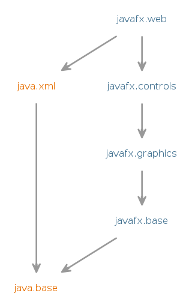

Module javafx.web
Defines APIs for the WebView functionality contained within the the
JavaFX UI toolkit.
- Module Graph:
- 
- Since:
- 9
{kind=link}
-
-
Packages
Exports Package Description javafx.scene.web This package provides means for loading and displaying Web content.
-
Modules
Requires Modifier Module Description transitive java.xml Defines the Java API for XML Processing (JAXP), the Streaming API for XML (StAX), the Simple API for XML (SAX), and the W3C Document Object Model (DOM) API.transitive javafx.base Defines the base APIs for the JavaFX UI toolkit, including APIs for bindings, properties, collections, and events.transitive javafx.controls Defines the UI controls, charts, and skins that are available for the JavaFX UI toolkit.transitive javafx.graphics Defines the core scenegraph APIs for the JavaFX UI toolkit (such as layout containers, application lifecycle, shapes, transformations, canvas, input, painting, image handling, and effects), as well as APIs for animation, css, concurrency, geometry, printing, and windowing.
-